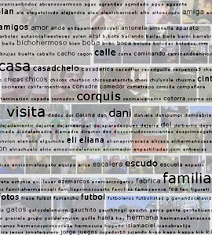

with Michael Dale, Carlos Trilnick, Cecilia Velasquez Traut, El Envion at Villa Tranquilas and Fundacion Crear Vale la Pena in Buenos Aires  An interactive exhibition of videos created in a series of workshops at cultural centers in two impoverished shantytowns in Buenos Aires and in an ISEA “organization-based” workshop in San Jose. Workshop participants use cheap “disposable” digital video cameras to document their daily lives and a custom-built web application that allows them to edit, tag and publish their video online. The workshop focuses on strategies for collective self-representation using software designed to allow participants to discover relationships and make connections between their personal stories. Thus, communities not traditionally thought of a scholarly or academic, produce and interpret knowledge using media and information technology.
Project Description Palabras employs the tactics of DIY technology and the philosophy of participatory culture by adapting and developing media and information technologies as tools for collective self-representation for a variety of communities. The project was based on the concept of the “community computer,” first proposed by activist Bruno Tardieu. The “community computer” is a social and technological system much like a typical computer system in which words can make things happen and associative memory evolves over time. While the “personal computer” provides a communications gateway to the Internet where communities of interest can evolve regardless of distance, the concept of the “community computer” is intended not to bypass, but to strengthen, communities of place – particularly marginalized communities - and to enable and empower them. To this end inexpensive “disposable” digital video cameras were transformed into re-usable cameras (using instructions and free software found on a DIY technology website) and a web application was developed for editing, tagging and publishing the video produced with these cameras online. These tools were designed for use in workshops at two cultural centers that serve shantytown communities in Buenos Aires. Workshop participants used the transformed “disposable” digital video cameras to document their daily lives. The workshop focused on strategies for collective self-representation using software designed to allow participants to discover relationships and make connections between their personal stories. Workshop participants worked in groups using this custom-designed free software to edit and organize their video clips. The workshop focused on strategies for collective self-representation and the software was designed specifically to allow the participants to discover relationships and make connections between their personal stories and images. The interface provides access to the videos through folksonomies (folk + taxonomies) participants create. Thus, communities not traditionally thought of a scholarly or academic, produce and interpret knowledge using media and information technology. Links http://palabrastranquilas.ucsc.edu |